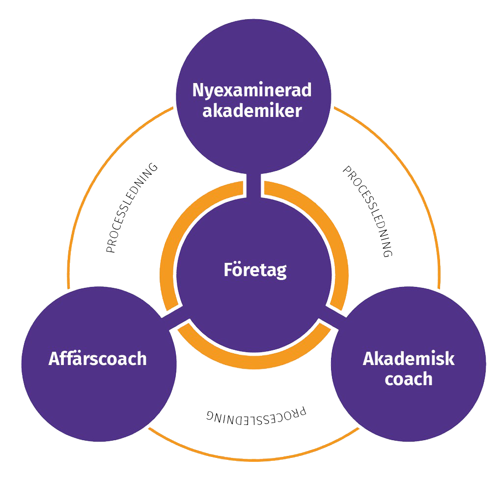
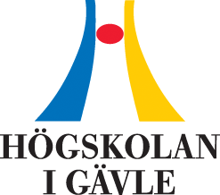
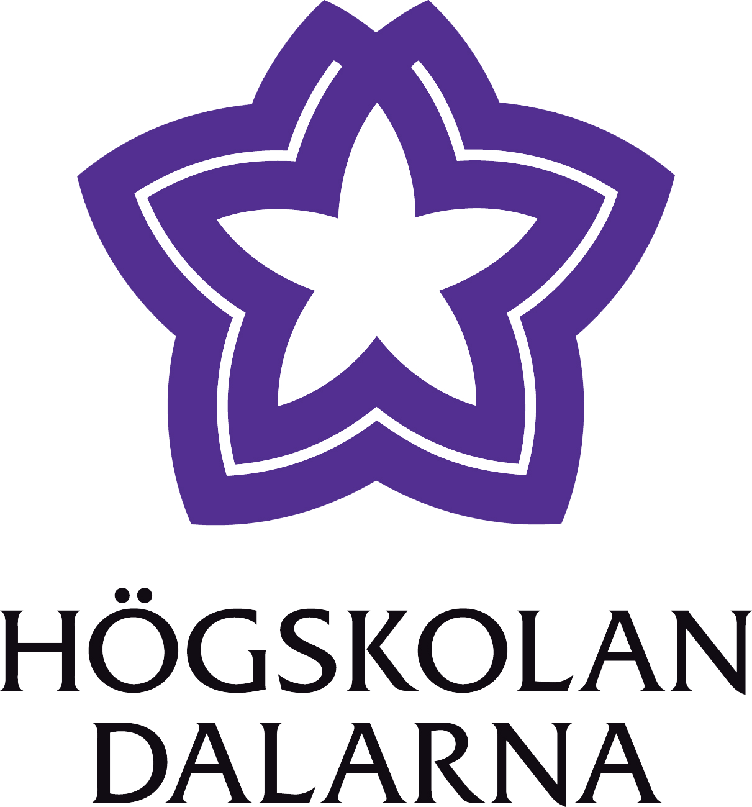

Vad är KTP?
Samverkan mellan näringsliv och akademi

KTP som samverkansmodell innebär att en nyutexaminserad akademiker på heltid genomför ett strategiskt kvalificerat utvecklingsprojekt hos ett företag i regionen i upp till två år. Det kan handla om produktutveckling, marknadsutveckling, processutveckling och energieffektivisering.
Under hela tiden medverkar Högskolan Dalarna eller Högskolan i Gävle med en akademisk coach, oftast en forskare samt en coach från näringslivet. Högskolorna kan bidra med labbresurser.
KTP-projektledaren erhåller marknadsmässig lön och företaget betalar hälften av personalkostnaderna. Resterande del finansieras med projektmedel,
Från rekrytering och genom hela projektet fram till avslut säkerställs respektive projekt av en processledare från någon av högskolorna.
 
Möjligheter just nu
KTP Energi
KTP Energi skall utveckla hållbar kunskapsväxling mellan akademi och näringsliv för att möta behoven av en övergång till koldioxidsnål ekonomi genom konkreta insatser inom energieffektivisering.
Projektet möjliggör 8-10st 1-åriga delprojekt på företag under 2019-2021.
Välkommen att kontakta oss!
KTP Science
KTP Science möjliggör företagsbaserad forskning inom till exempel:
- Utveckling och testning av produkter och tjänster
- Verifiering av produkter och tjänster
- Nya sätt att producera produkter
- Användningsområden för restmaterial.
Välkommen att kontakta oss!